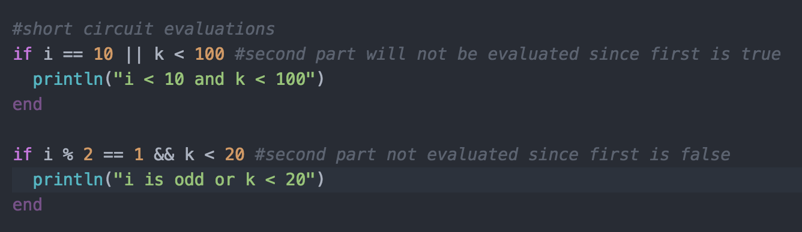

Double Teaming Julia

History of Julia
The development of Julia began in 2009 with 4 contributors: Viral B. Shah,
Jeff Bezanson, Stefan Karpinski and Alan Edelman. They revealed Julia for
the first time on Valentine's Day 2012, making it open source and inviting
contributions from others. The first free version was released a year later.
The main allure of Julia is its speed. Here is a table from the official Julia
website comparing how fast common algorithms perform when implemented in Julia
compared to other popular languages.
 Another important feature of Julia is the ease of development. Its syntax is
much like Python or Ruby. Variables don't need to be declared and there are no end
of line terminators. Also, C functions can be called without wrappers, and there is
an ample library of math functions and libraries for data visualization. The number
of Julia users is currently about 250,000. Many of these users are in the area of data
analysis and scientific computing, where speed is indispensible.
These benefits of Julia were summed up in a blog post by the creators, answering the
question of why they created Julia:
In short, because we are greedy.
We are power Matlab users. Some of us are Lisp hackers. Some are Pythonistas, others Rubyists
still others Perl hackers. ... We've generated more R plots than any sane person should. C is
our desert island programming language.
We love all of these languages; they are wonderful and powerful. For the work we do - scientific
computing, machine learning, data mining, large-scale linear algebra, distributed and parallel
computing - each one is perfect for some aspects of the work and terrible for others. Each one
is a trade-off.
We want a language that's open source, with a liberal license. We want the speed of C with the
dynamism of Ruby. ... We want something as usable for general programming as Python, as easy for
statistics as R, as natural for string processing as Perl, as powerful for linear algebra as Matlab
... Something that is dirt simple to learn, yet keeps the most serious hackers happy. ...
(Did we mention it should be as fast as C?)
Julia's current version is 5.1, a translator can be found at: Julia.com
We hope you have as much fun working with Julia as we and 250,000 others do!
Another important feature of Julia is the ease of development. Its syntax is
much like Python or Ruby. Variables don't need to be declared and there are no end
of line terminators. Also, C functions can be called without wrappers, and there is
an ample library of math functions and libraries for data visualization. The number
of Julia users is currently about 250,000. Many of these users are in the area of data
analysis and scientific computing, where speed is indispensible.
These benefits of Julia were summed up in a blog post by the creators, answering the
question of why they created Julia:
In short, because we are greedy.
We are power Matlab users. Some of us are Lisp hackers. Some are Pythonistas, others Rubyists
still others Perl hackers. ... We've generated more R plots than any sane person should. C is
our desert island programming language.
We love all of these languages; they are wonderful and powerful. For the work we do - scientific
computing, machine learning, data mining, large-scale linear algebra, distributed and parallel
computing - each one is perfect for some aspects of the work and terrible for others. Each one
is a trade-off.
We want a language that's open source, with a liberal license. We want the speed of C with the
dynamism of Ruby. ... We want something as usable for general programming as Python, as easy for
statistics as R, as natural for string processing as Perl, as powerful for linear algebra as Matlab
... Something that is dirt simple to learn, yet keeps the most serious hackers happy. ...
(Did we mention it should be as fast as C?)
Julia's current version is 5.1, a translator can be found at: Julia.com
We hope you have as much fun working with Julia as we and 250,000 others do!
Paradigm
Julia exhibits several of the characterstics of the Object-Oriented Paradigm including objects,
polymorpohism, generics. The definition and instantiation of objects in Julia is similar to
definition and instantiation of objects in Java. Take for example Patches, a cool, Cantonese-speaking
dog:
 Of course, not all dogs are as cool as Patches, but we treat them as dogs anyways. In Julia, subtyping
is not supported, but abstract types are, giving us polymorphism. Consider this more inclusive view
of dogs:
Of course, not all dogs are as cool as Patches, but we treat them as dogs anyways. In Julia, subtyping
is not supported, but abstract types are, giving us polymorphism. Consider this more inclusive view
of dogs:
 Now we write functions that take any one of the Dog types. Julia also supports adhoc polymorphism
through the use of informal interfaces. Thefollowing is an example of a type implementing the
iterable interface:
Now we write functions that take any one of the Dog types. Julia also supports adhoc polymorphism
through the use of informal interfaces. Thefollowing is an example of a type implementing the
iterable interface:
 Note that we do not need access to the definition of Triple to use it. We only need to instantiate it;
the innerworkings are encapsulated in the defintion. Using the fact that Triple implements interable,
compilers can convert this code:
Note that we do not need access to the definition of Triple to use it. We only need to instantiate it;
the innerworkings are encapsulated in the defintion. Using the fact that Triple implements interable,
compilers can convert this code:
 into this code:
Given the loose typing and operator overloading in Julia, we can write functions that can operate
on multiple types. The following is an example of parametric polymorphism using the less than operator:
into this code:
Given the loose typing and operator overloading in Julia, we can write functions that can operate
on multiple types. The following is an example of parametric polymorphism using the less than operator:
Typing System
According to the Julia documentation, the language is statically typed. That is, types are not checked
before execution but at run time, much like Python or Ruby. Julia does provide the option however, to
specify that a certain object will be of a given type. This can have the benefit of generating more
efficient code, since then the translator can do safety checks before runtime, and make more assumptions
about the behavior of the code. Since Julia is typed this way, variable declarations are not necessary.
A programmer does have the ability to create new types through user defined classes. An example of this
is given in the Abstractions section below. With respect to functions, they are treated as objects. To
quote the Julia documentation: "... a function is an object that maps a tuple of argument values to a
return value. Julia functions are not pure mathematical functions, in the sense that functions can alter
and be affected by the global state of the program."
Control Structures
Iteration
Iteration in Julia is acheived by using one of the two looping constructs,
'while' or 'for'. A while loop, as shown below, evaluates a boolean expression,
and as long as that expression is true, the body of the loop will be executed.
A common task when looping is counting up or down, this can be done with a
while loop, but is simplfied with the for loop syntax. In the example below,
k runs from 1 to 5, and the body of the loop is executed for each value of k.
If, ElseIf, Else
Selection statements in Julia are similar if not identical in structure
to most languages. If a certain condition is true, then the body of the 'if'
will be executed. If it is false, and there is an 'elseif' paired with the
original 'if' then a second condition will be evaluated, and if it is true
then the body of the 'elseif' will be executed. If this is false, then there
may be other 'elseif' blocks or simply a default 'else' block whose body
will be executed if all the preceding statements evaluated to false.

Short Circuit Evaluation
This behavior allows for efficient evaluations of boolean expressions chained
together with 'ors' and 'ands' (|| and &&). That is, only the minimum
number of predicates in an expression are evaluated to determine the truth
value of the entire expression. The Julia documentations sums it up this way:
In the expression a && b, the subexpression b is only evaluated if a evaluates to true.
In the expression a || b, the subexpression b is only evaluated if a evaluates to false.
Infomally, this is because if the first part of an 'and' is false, the entire expression
is false. Similarly, if the first part of an 'or' is true, the entire expression is true.
Thus in both cases, there is no need to evaluate the second part of the expression.
The following example demonstrated this behavior.

Ternary Operator

Compound Statments

Support for Data Abstractions
Classes
Programmers can create new data abstractions in the form of user defined classes.
Classes allow for the implementation of various abstract data types and are of course
the basis for object orientation. In the following example, a simple "Student" class
is defined. An instance of Student is then instantiated, and all of its info is printed out.

Arrays
On of the most important abstractions provided by Julia is arrays. In Julia, arrays can
hold any type, and many types can be held in an array at the same time. Julia provides
various functions to work with arrays, some examples of these functions in use follows.

Syntax
Syntax in Julia is a mixture of the syntax of languages such as Python, Ruby, and Matlab.
There are no end of line terminators. Variables do not need to be declared. Unlike Python,
but just like Ruby and Matlab, code blocks are enclosed by a keyword and an 'end', like
in the following examples.
 Some very useful features of Julia syntax include list comprehensions (like Python and Ruby),
and ranges (Matlab style). List comprehensions allow you to create new lists using set-like
notations, and ranges allow you to create a list of numbers, such as 1 through 100. The latter
is used in for loops. Here is an example of a for loop iterating through a list of the number 1
through 20, and some list comprehensions.
Some very useful features of Julia syntax include list comprehensions (like Python and Ruby),
and ranges (Matlab style). List comprehensions allow you to create new lists using set-like
notations, and ranges allow you to create a list of numbers, such as 1 through 100. The latter
is used in for loops. Here is an example of a for loop iterating through a list of the number 1
through 20, and some list comprehensions.

Semantics
According to the Julia homepage, Julia is lexically scoped. That is, the scope of a variable is
determined by where it was defined, not by a caller's scope. Garbage is managed much like in Java,
with a garbage collector that regularly runs. There is no 'free' command like in C. But you may
replace an object that is no longer needed with an object requiring less space. One example given
in the documentation is that if you have a large array that you won't use anymore, say A, you can
set A = 0, and the garbage collector will free the old memory the next time it runs. You can force
the garbage collector to run by calling gc().
Desirable Characteristics
Efficiency
Regularity
Security